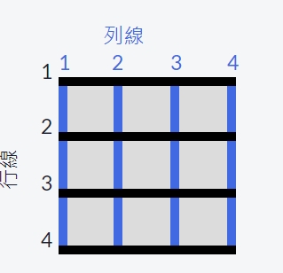

使用 grid-column 來控制空間大小
到目前爲止，所有的討論都是圍繞網格容器的。
grid-column 屬性是我們要討論的，第一個用於網格項本身的屬性。
網格中，假想的水平線和垂直線被稱爲線（lines）。
這些線在網格的左上角從 1 開始編號，垂直線向右、水平線向下累加計數。
這是一個 3x3 網格的線條：

要設置一個網格項佔據幾列，你可以使用 grid-column
屬性加上網格線條的編號來定義網格項開始和結束的位置。
示例如下：
grid-column: 1 / 3;
這會讓網格項從左側第一條線開始到第三條線結束，佔用兩列。
請讓 class 爲 item5 的網格項佔用網格的最後兩列。